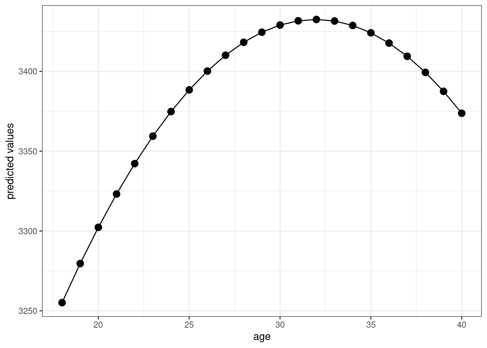

3.1 Topics in Probability
At a very high level, probability is the set of mathematical tools that allow us to think about random events.
Just to be clear, random means uncertain, not 50:50.
A simple example of a random event is the outcome from rolling a die.
Eventually, we will treat data as being random draws from some population. Examples of things that we will treat as random draws are things like a person’s hair color, height, income, etc. We will think of all of these as being random draws because ex ante we don’t know what they will be.
3.1.1 Data for this chapter
For this chapter, we’ll use data from the U.S. Census Bureau from 2019. It is not quite a full census, but we’ll treat it as the population throughout this chapter.
3.1.2 Random Variables
SW 2.1
A random variable is a numerical summary of some random event.
Some examples:
Height in inches
Creating a random variable sometime involves “coding” non-numeric outcomes, e.g., setting
hair=1if a person’s hair color is black,hair=2if a person’s hair is blonde, etc.
We’ll generally classify random variables into one of two categories
Discrete — A random variable that takes on discrete values such as 0, 1, 2
Continuous — Takes on a continuum of values
These are broad categories because a lot of random variables in economics sit in between these two.
3.1.3 pdfs, pmfs, and cdfs
SW 2.1
The distribution of a random variable describes how likely it is take on certain values.
A random variable distribution is fully summarized by its:
probability mass function (pmf) if the random variable is discrete
probability density function (pdf) if the random variable is continuous
The pmf is somewhat easier to explain, so let’s start there. For some discrete random variable \(X\), its pmf is given by
\[ f_X(x) = \mathrm{P}(X=x) \] That is, the probability that \(X\) takes on some particular value \(x\).
Example 3.1 Suppose that \(X\) denotes the outcome of a roll of a die. Then, \(f_X(1)\) is the probability of rolling a one. And, in particular,
\[ f_X(1) = \mathrm{P}(X=1) = \frac{1}{6} \]
Example 3.2 Let’s do a bit more realistic example where we look at the pmf of education in the U.S. Suppose that \(X\) denotes the years of education that a person has. Then, \(f_X(x)\) is the probability that a person has exactly \(x\) years of education. We can set \(x\) to different values and calculate the probabilities of a person having different amounts of education. That’s what we do in the following figure:
Figure 3.1: pmf of U.S. education
There are some things that are perhaps worth pointing out here. The most common amount of education in the U.S. appears to be exactly 12 years — corresponding to graduating from high school; about 32% of the population has that level of education. The next most common number of years of education is 16 — corresponding to graduating from college; about 24% of individuals have this level of education. Other relatively common values of education are 13 years (14% of individuals) and 18 (13% of individuals). About 1% of individuals report 0 years of education. It’s not clear to me whether or not that is actually true or reflects some individuals mis-reporting their education.
Before going back to the pdf, let me describe another way to fully summarize the distribution of a random variable.
- Cumulative distribution function (cdf) - The cdf of some random variable \(X\) is defined as
\[ F_X(x) = \mathrm{P}(X \leq x) \] In words, this cdf is the probability that the random \(X\) takes a value less than or equal to \(x\).
Example 3.3 Suppose \(X\) is the outcome of a roll of a die. Then, \(F_X(3) = \mathrm{P}(X \leq 3)\) is the probability of rolling 3 or lower. Thus,
\[ F_X(3) = \mathrm{P}(X \leq 3) = \frac{1}{2} \]
Example 3.4 Let’s go back to our example of years of education in the U.S. In this case, \(F_X(x)\) is the fraction of the population that has less than \(x\) years of education. We can calculate this for different values of \(x\). That’s what we do in the following figure:
Figure 3.2: cdf of U.S. educ
You can see that the cdf is increasing in the years of education.
Figure 3.3: pdf of U.S. wage income
Figure 3.4: cdf of U.S. wage income
3.1.4 Summation operator
It will be convenient for us to have a notation that allows us to add up many numbers/variables at the same time. To do this, we’ll introduce the \(\sum\) operation.
As a simple example, suppose that we have three variables (it doesn’t matter if they are random or not): \(x_1,x_2,x_3\) and we want to add them up. Then, we can write \[ \sum_{i=1}^3 x_i := x_1 + x_2 + x_3 \] Many timess, once we have data, there will be n “observations” and we can add them up by: \[ \sum_{i=1}^n x_i = x_1 + x_2 + \cdots + x_n \] Properties:
- For any constant \(c\),
\[ \sum_{i=1}^n c = n \cdot c \] [This is just the definition of multiplication]
- For any constant c,
\[ \sum_{i=1}^n c x_i = c \sum_{i=1}^n x_i \] In words: constants can be moved out of the summation.
We will use the property often throughout the semester.
As an example, \[ \begin{aligned} \sum_{i=1}^3 7 x_i &= 7x_1 + 7x_2 + 7x_3 \\ &= 7(x_1 + x_2 + x_3) \\ &= 7 \sum_{i=1}^3 x_i \end{aligned} \] where the first line is just the definition of the summation, the second equality factors out the 7, and the last equality writes the part about adding up the \(x\)’s using summation notation.
3.1.5 Continuous Random Variables
SW 2.1
3.1.6 Expected Values
SW 2.2
The expected value of some random variable \(X\) is its (population) mean and is written as \(\mathbb{E}[X]\). [I tend to write \(\mathbb{E}[X]\) for the expected value, but you might also see notation like \(\mu\) or \(\mu_X\) for the expected value.]
The expected value of a random variable is a feature of its distribution. In other words, if you know the distribution of a random variable, then you also know its mean.
The expected value is a measure of central tendency (alternative measures of central tendency are the median and mode).
Expected values are a main concept in the course (and in statistics/econometrics more generally). I think there are two main reasons for this:
Unlike a cdf, pdf, or pmf, the expected value is a single number. This means that it is easy to report. And, if you only knew one feature (at least a feature that that only involves a single number) of the distribution of some random variable, probably the feature that would be most useful to know would be the mean of the random variable.
Besides that, there are some computational reasons (we will see these later) that the mean can be easier to estimate than, say, the median of a random variable
If \(X\) is a discrete random variable, then the expected value is defined as
\[ \mathbb{E}[X] = \sum_{x \in \mathcal{X}} x f_X(x) \] You can think of this as a weighted average of all possible realizations of the random variable \(X\) where the weights are given by the probability of \(X\) taking that particular value. This may be more clear with an example…
Example 3.5 Suppose that \(X\) is the outcome from a roll of a die. Then, its expected value is given by
\[ \begin{aligned} \mathbb{E}[X] &= \sum_{x=1}^6 x f_X(x) \\ &= 1\left(\frac{1}{6}\right) + 2\left(\frac{1}{6}\right) + \cdots + 6\left(\frac{1}{6}\right) \\ &= 3.5 \end{aligned} \]
3.1.7 Variance
SW 2.2
The next most important feature of the distribution of a random variable is its variance. The variance of a random variable \(X\) is a measure of its “spread,” and we will denote it \(\mathrm{var}(X)\) [You might also sometimes see the notation \(\sigma^2\) or \(\sigma_X^2\) for the variance.] The variance is defined as
\[ \mathrm{var}(X) := \mathbb{E}\left[ (X - \mathbb{E}[X])^2 \right] \] Before we move forward, let’s think about why this is a measure of the spread of a random variable.
- \((X-\mathbb{E}[X])^2\) is a common way to measure the “distance” between \(X\) and \(\mathbb{E}[X]\).
Sometimes, we will also consider the standard deviation of a random variable. The standard deviation is defined as
\[ \textrm{sd}(X) := \sqrt{\mathrm{var}(X)} \] You might also see the notation \(\sigma\) or \(\sigma_X\) for the standard deviation.
The standard deviation is often easier to interpret than the variance because it has the same “units” as \(X\). Variance “units” are squared units of \(X\).
That said, variances more often show up in formulas/derivations this semester.
3.1.8 Mean and Variance of Linear Functions
SW 2.2
For this part, suppose that \(Y=a + bX\) where \(Y\) and \(X\) are random variables while \(a\) and \(b\) are fixed constants.
Properties of Expectations
\(\mathbb{E}[a] = a\) [In words: the expected value of a constant is just the constant. This holds because there is nothing random about \(a\) — we just know what it is.]
\(\mathbb{E}[bX] = b\mathbb{E}[X]\) [In words: the expected value of a constant times a random variable is equal to the constant times the expected value of the random variable. We will use this property often this semester.]
\(\mathbb{E}[a + bX] = a + b\mathbb{E}[X]\) [In words: expected values “pass through” sums. We will use this property often this semester.]
You’ll also notice the similarity between the properties of summations and expectations. This is not a coincidence — it holds because expectations are defined as summations (or very closely related, as integrals).
Properties of Variance
\(\mathrm{var}(a) = 0\) [In words: the variance of a constant is equal to 0.]
\(\mathrm{var}(bX) = b^2 \mathrm{var}(X)\) [In words: A constant can come out of the variance, but it needs to be squared first.]
\(\mathrm{var}(a + bX) = \mathrm{var}(bX) = b^2 \mathrm{var}(bX)\)
Example 3.6 Later on in the semester, it will sometimes be convenient for us to “standardize” some random variables. We’ll talk more about the reason to do this later, but for now, I’ll just give the typical formula for standardizing a random variable and we’ll see if we can figure out what the mean and variance of the standardized random variable are.
\[ Y = \frac{ X - \mathbb{E}[X]}{\sqrt{\mathrm{var}(X)}} \] Just to be clear here, we are standardizing the random variable \(X\) and calling its standardized version \(Y\). Let’s calculate its mean
\[ \begin{aligned} \mathbb{E}[Y] &= \mathbb{E}\left[ \frac{X}{\sqrt{\mathrm{var}(X)}} - \frac{\mathbb{E}[X]}{\sqrt{\mathrm{var}(X)}} \right] \\ &= \mathbb{E}\left[ \frac{X}{\sqrt{\mathrm{var}(X)}} \right] - \mathbb{E}\left[ \frac{\mathbb{E}[X]}{\sqrt{\mathrm{var}(X)}} \right] \\ &= \frac{\mathbb{E}[X]}{\mathrm{var}(X)} - \frac{\mathbb{E}[X]}{\mathrm{var}(X)} \\ &= 0 \end{aligned} \] where the first equality just comes from the definition of \(Y\) and the second equality holds because expectations can pass through differences. For the first term in the third equality, it holds because \(\mathrm{var}(X)\) is a constant and can therefore come out of the expectation, and then all that is left is \(\mathbb{E}[X]\). For the second term, \(\mathbb{E}[X]\) and \(\mathrm{var}(X)\) are both just constants, so this is the expectation of a constant which is just equal to the constant itself. Then, the first term and second term cancel each other so that the mean of \(Y\) is 0. Now let’s calculate the variance.
\[ \begin{aligned} \mathrm{var}(Y) &= \mathrm{var}\left( \frac{X}{\sqrt{\mathrm{var}(X)}} - \frac{\mathbb{E}[X]}{\sqrt{\mathrm{var}(X)}} \right) \\ &= \mathrm{var}\left( \frac{X}{\sqrt{\mathrm{var}(X)}}\right) \\ &= \left( \frac{1}{\sqrt{\mathrm{var}(X)}} \right)^2 \mathrm{var}(X) \\ &= \frac{\mathrm{var}(X)}{\mathrm{var}(X)} \\ &= 1 \end{aligned} \] where the first equality holds by the definition of \(Y\), the second equality holds because the second term is a constant and by Variance Property 3 above, the third equality holds because \((1/\sqrt{\mathrm{var}(X)})\) is a constant and can come out of the variance but needs to be squared, the fourth equality holds by squaring the term on the left, and the last equality holds by cancelling the numerator and denominator.
Therefore, we have showed that the mean of the standardized random variables is 0 and its variance is 1. This is, in fact, the goal of standardizing a random variable — to transform it so that it has mean 0 and variance 1 and the particular transformation given in this example is one that delivers a new random variable with these properties.
3.1.9 Multiple Random Variables
SW 2.3
Most often in economics, we want to consider two (or more) random variables jointly rather than just a single random variable. For example, mean income is interesting, but mean income as a function of education is more interesting.
When there is more than one random variable, you can define joint pmfs, joint pdfs, and joint cdfs.
3.1.10 Conditional Expectations
SW 2.3
For two random variables, \(Y\) and \(X\), the conditional expectation of \(Y\) given \(X=x\) is the mean value of \(Y\) conditional on \(X\) taking the particular value \(x\). In math, this is written
\[ \mathbb{E}[Y|X=x] \]
One useful way to think of a conditional expectation is as a function of \(x\). For example, suppose that \(Y\) is a person’s yearly income and \(X\) is a person’s years of education. Clearly, mean income can change for different values of education.
Conditional expectations will be a main focus of ours throughout the semester
An extremely useful property of conditional expectations is that they generalize from the case with two variables to the case with multiple variables. For example, suppose that we have four random variables \(Y\), \(X_1\), \(X_2\), and \(X_3\).
3.1.11 Law of Iterated Expectations
SW 2.3
Another important property of conditional expectations is called the law of iterated expectations. It says that
\[ \mathbb{E}[Y] = \mathbb{E}\big[ \mathbb{E}[Y|X] \big] \] In words: The expected value of \(Y\) is equal to the expected value (this expectation is with respect to \(X\)) of the conditional expectation of \(Y\) given \(X\).
This may seem like a technical property, but I think the right way to think about the law of iterated expectations is that there is an inherent relationship between unconditional expectations and conditional expectations. In other words, although conditional expectations can vary arbitrarily for different values of \(X\), if you know what the conditional expectations are, the overall expected value of \(Y\) is fully determined.
A simple example is one where \(X\) takes only two values. Suppose we are interested in mean birthweight (\(Y\)) for children of mother’s who either drank alcohol during their pregnancy (\(X=1\)) or who didn’t drink alcohol during their pregnancy (\(X=0\)). Suppose the following (just to be clear, these are completely made up numbers), \(\mathbb{E}[Y|X=1] = 7\), \(\mathbb{E}[Y|X=0]=8\) \(\mathrm{P}(X=1) = 0.1\) and \(\mathrm{P}(X=0)=0.9\). The law of iterated expectation says that \[ \begin{aligned} \mathbb{E}[Y] &= \mathbb{E}\big[ \mathbb{E}[Y|X] \big] \\ &= \sum_{x \in \mathcal{X}} \mathbb{E}[Y|X=x] \mathrm{P}(X=x) \\ &= \mathbb{E}[Y|X=0]\mathrm{P}(X=0) + \mathbb{E}[Y|X=1]\mathrm{P}(X=1) \\ &= (8)(0.9) + (7)(0.1) \\ &= 7.9 \end{aligned} \]
The law of iterated expectations still applies in more complicated cases (e.g., \(X\) takes more than two values, \(X\) is continuous, or \(X_1\),\(X_2\),\(X_3\)) but the intuition is still the same.
3.1.12 Covariance
SW 2.3
The covariance between two random variables \(X\) and \(Y\) is a masure of the extent to which they “move together.” It is defined as
\[ \mathrm{cov}(X,Y) := \mathbb{E}[(X-\mathbb{E}[X])(Y-\mathbb{E}[Y])] \] A natural first question to ask is: why does this measure how \(X\) and \(Y\) move together. Notice that covariance can be positive or negative. It will tend to be negative if big values of \(X\) (so that \(X\) is above its mean) tend to happen at the same time as big values of \(Y\) (so that \(Y\) is above its mean) while small values of \(X\) (so that \(X\) is below its mean) tend to happen at the same time as small values of \(Y\) (so that \(Y\) is below its mean).
An alternative and useful expression for covariance is \[ \mathrm{cov}(X,Y) = \mathbb{E}[XY] - \mathbb{E}[X]\mathbb{E}[Y] \] Relative to the first expression, this one is probably less of a natural definition but often more useful in mathematical problems.
One more thing to notice, if \(X\) and \(Y\) are independent, then \(\mathrm{cov}(X,Y) = 0\).
3.1.13 Correlation
SW 2.3
It’s often hard to interpret covariances directly (the “units” are whatever the units of \(X\) are times the units of \(Y\)), so it is common to scale the covariance to get the correlation between two random variables:
\[ \mathrm{corr}(X,Y) := \frac{\mathrm{cov}(X,Y)}{\sqrt{\mathrm{var}(X)} \sqrt{\mathrm{var}(Y)}} \] The correlation has the property that it is always between \(-1\) and \(1\).
If \(\mathrm{corr}(X,Y) = 0\), then \(X\) and \(Y\) are said to be uncorrelated.
3.1.14 Properties of Expectations/Variances of Sums of RVs
SW 2.3
Here are some more properties of expectations and variances when there are multiple random variables. For two random variables \(X\) and \(Y\)
\(\mathbb{E}[X+Y] = \mathbb{E}[X] + \mathbb{E}[Y]\)
\(\mathrm{var}(X+Y) = \mathrm{var}(X) + \mathrm{var}(Y) + 2\mathrm{cov}(X,Y)\)
The first property is probably not surprising — expectations continue to pass through sums. The second property, particularly the covariance term, needs more explanation. To start with, you can just plug \(X+Y\) into the definition of variance and (with a few lines of algebra) show that the second property is true. But, for the intuition, let me explain with an example. Suppose that \(X\) and \(Y\) are rolls of two dice, but somehow these dice are positively correlated with each other — i.e., both rolls coming up with high numbers (and low numbers) are more likely than with regular dice. Now, think about what the sum of two dice rolls can be: the smallest possible sum is 2 and other values are possible up to 12. Moreover, the smallest and largest possible sum of the rolls (2 and 12), which are farthest away from the mean value of 7, are relatively uncommon. You have to roll either \((1,1)\) or \((6,6)\) to get either of these and the probability of each of those rolls is just \(1/36\). However, when the dice are positively correlated, the probability of both rolls being very high or very low becomes more likely — thus, since outcomes far away from the mean become more likely, the variance increases.
One last comment here is that, when \(X\) and \(Y\) are independent (or even just uncorrelated), the formula for the variance does not involve the extra covariance term because it is equal to 0.
These properties for sums of random variables generalize to the case with more than two random variables. For example, suppose that \(Y_1, \ldots, Y_n\) are random variables, then
= _{i=1}^n
If \(Y_i\) are mutually independent, then \(\mathrm{var}\left( \sum_{i=1}^n Y_i \right)\sum_{i=1}^n \mathrm{var}(Y_i)\)
Notice that the last line does not involve any covariance terms, but this is only because of the caveat that the \(Y_i\) are mutually independent. Otherwise, there would actually be tons of covariance terms that would need to be accounted for.
3.1.15 Normal Distribution
SW 2.4
You probably learned about a lot of particular distributions of random variables in your Stats class. There are a number of important distributions:
Normal
Binomial
t-distribution
F-distribution
Chi-squared distribution
others
SW discusses a number of these distributions, and I recommend that you read/review those distributions. For us, the most important distribution is the Normal distribution [we’ll see why a few classes from now].
If a random variable \(X\) follows a normal distribution with mean \(\mu\) and variance \(\sigma^2\), we write
\[ X \sim N(\mu, \sigma^2) \] where \(\mu = \mathbb{E}[X]\) and \(\sigma^2 = \mathrm{var}(X)\).
Importantly, if we know that \(X\) follows a normal distribution, its entire distribution is fully characterized by its mean and variance. In other words, if \(X\) is normally distributed, and we also know its mean and variance, then we know everything about its distribution. [Notice that this is not generally true — if we did not know the distribution of \(X\) but knew its mean and variance, we would know two important features of the distribution of \(X\), but we would not know everything about its distribution.]
You are probably familiar with the pdf of a normal distribution — it is “bell-shaped.”

From the figure, you can see that a normal distribution is unimodal (there is just one “peak”) and symmetric (the pdf is the same if you move the same distance above \(\mu\) as when you move the same distance below \(\mu\)). This means that, for a random variable that follows a normal distribution, its median and mode are also equal to \(\mu\).
From the plot of the pdf, we can also tell that, if you make a draw from \(X \sim N(0,\mu)\), the most likely values are near the mean. As you move further away from \(\mu\), it becomes less likely (though not impossible) for a draw of \(X\) to take that value.
Recall that we can calculate the probability that \(X\) takes on a value in a range by calculating the area under the curve of the pdf. For each shaded region in the figure, there is a 2.5% chance that \(X\) falls into that region (so the probability of \(X\) falling into either region is 5%). Another way to think about this is that there is a 95% probability that a draw of \(X\) will be in the region \([\mu-1.96\sigma, \mu+1.96\sigma]\). Later, we we talk about hypothesis testing, this will be an important property.
Earlier, we talked about standardizing random variables. If you know that a random variable follows a normal distribution, it is very common to standardize it. In particular notice that, if you create the standardized random variable
\[ Z := \frac{X - \mu}{\sigma} \quad \textrm{then} \quad Z \sim N(0,1) \] If you think back to your statistics class, you may have done things like calculating a p-value by looking at a “Z-table” in the back of a textbook (I’m actually not sure if this is still commonly done because it is often easier to just do this on a computer, but, back in “my day” this was a very common exercise in statistics classes). Standardizing allows you to look at just one table for any normally distributed random variable that you could encounter rather than requiring you to have different Z table for each value of \(\mu\) and \(\sigma^2\).
3.1.16 Coding
To conclude this section, we’ll use R to compute the features of the joint distribution of income and education that we have discussed above.
# create vectors of income and educ
income <- us_data$incwage
educ <- us_data$educ
# mean of income
mean(income)
#> [1] 58605.75
# mean of education
mean(educ)
#> [1] 13.96299
# variance
var(income)
#> [1] 4776264026
var(educ)
#> [1] 8.345015
# standard deviation
sd(income)
#> [1] 69110.52
sd(educ)
#> [1] 2.888774
# covariance
cov(income,educ)
#> [1] 63766.72
# correlation
cor(income, educ)
#> [1] 0.31940113.1.16.1 Basic Plots
Related Reading:
Finally, in this section, I’ll introduce you to some basic plotting. Probably the most common type of plot that I use is a line plot. We’ll go for trying to plot average income as a function of education.
In this section, I’ll introduce you to R’s ggplot2 package. This is one of the most famous plot-producing packages (not just in R, but for any programming language). The syntax may be somewhat challenging to learn, but I think it is worth it to exert some effort here.
Side Comment: Base R has several plotting functions (e.g., plot). Check IDS 2.15 for an introduction to these functions. These are generally easier to learn but less beautiful than plots coming from ggplot2.
# load ggplot2 package
# (if you haven't installed it, you would need to do that first)
library(ggplot2)
# load dplyr package for "wrangling" data
library(dplyr)# arrange data
plot_data <- us_data %>%
group_by(educ) %>%
summarize(income=mean(incwage))
# make the plot
ggplot(data=plot_data,
mapping=aes(x=educ,y=income)) +
geom_line() +
geom_point(size=3) +
theme_bw()
Let me explain what’s going on here piece-by-piece. Let’s start with this code
# arrange data
plot_data <- us_data %>%
group_by(educ) %>%
summarize(income=mean(incwage))At a high-level, making plots often involves two steps — first arranging the data in the “appropriate” way (that’s this step) and then actually making the plot.
This is “tidyverse-style” code too — in my view, it is a little awkward, but it is also common so I think it is worth explaining here a bit.
First, the pipe operator, %>% takes the thing on the left of it and applies the function to the right of it. So, the line us_data %>% group_by(educ) takes us_data and applies the function group_by to it, and what we group by is educ. That creates a new data frame (you could just run that code and see what you get). The next line takes that new data frame and applies the function summarize to it. In this case, summarize creates a new variable called income that is the mean of the column incwage and it is the mean by educ (since we grouped by education in the previous step).
Take a second and look through what has actually been created here. plot_data is a new data frame, but it only has 18 observations — corresponding to each distinct value of education in the data. It also has two columns, the first one is educ which is the years of education, and the second one is income which is the average income among individuals that have that amount of education.
An alternative way of writing the exact same code (that seems more natural to me) is
# arrange data
grouped_data <- group_by(us_data, educ)
plot_data <- summarize(grouped_data, income=mean(incwage))If you’re familiar with other programming languages, the second version of the code probably seems more familiar. Either way is fine with me — tidyverse-style seems to be trendy in R programming these days, but (for me) I think the second version is a little easier to understand. You can find long “debates” about these two styles of writing code if you happen to be interested…
Next, let’s consider the second part of the code.
# make the plot
ggplot(data=plot_data,
mapping=aes(x=educ,y=income)) +
geom_line() +
geom_point(size=3) +
theme_bw()The main function here is ggplot. It takes in two main arguments: data and mapping. Notice that we set data to be equal to plot_data which is the data frame that we just created. The mapping is set equal to aes(x=educ,y=income). aes stands for “aesthetic,” and here you are just telling ggplot the names of the columns in the data frame that should be on the x-axis (here: educ) and on the y-axis (here: income) in the plot. Also, notice the + at the end of the line; you can interpret this as saying “keep going” to the next line before executing.
If we just stopped there, we actually wouldn’t plot anything. We still need to tell ggplot what kind of plot we want to make. That’s where the line geom_line comes in. It tells ggplot that we want to plot a line. Try running the code with just those two lines — you will see that you will get a similar (but not exactly the same) plot.
geom_point adds the dots in the figure. size=3 controls the size of the points. I didn’t add this argument originally, but the dots were hard to see so I made them bigger.
theme_bw changes the color scheme of the plot. It stands for “theme black white.”
There is a ton of flexibility with ggplot — way more than I could list here. But let me give you some extras that I tend to use quite frequently.
In
geom_lineandgeom_point, you can add the extra argumentcolor; for example, you could trygeom_line(color="blue")and it would change the color of the line to blue.In
geom_line, you can change the “type” of the line by using the argumentlinetype; for example,geom_line(linetype="dashed")would change the line from being solid to being dashed.In
geom_line, the argumentsizecontrols the thickness of the line.The functions
ylabandxlabcontrol the labels on the y-axis and x-axisThe functions
ylimandxlimcontrol the “limits” of the y-axis and x-axis. Here’s how you can use these:# make the plot ggplot(data=plot_data, mapping=aes(x=educ,y=income)) + geom_line() + geom_point(size=3) + theme_bw() + ylim=c(0,150000) + ylab("Income") + xlab("Education")which will adjust the y-axis and change the labels on each axis.
Side-Comment: When we start to consider more realistic/interesting applications, we typically won’t know (or be able to easily figure out) \(\mathbb{E}[X]\). Instead, we’ll try to estimate it using available data. We’ll carefully distinguish between population quantities like \(\mathbb{E}[X]\) and sample quantities like an estimate of \(\mathbb{E}[X]\) soon.